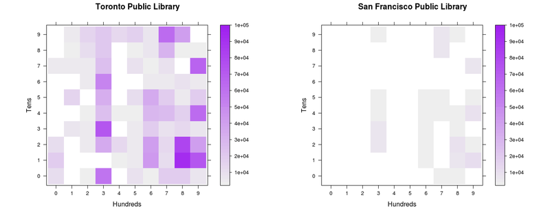
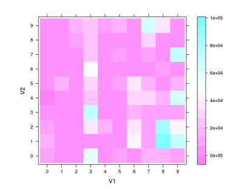
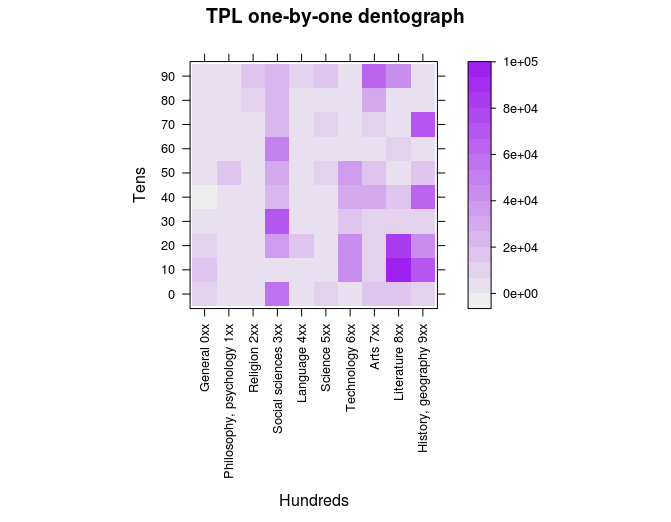
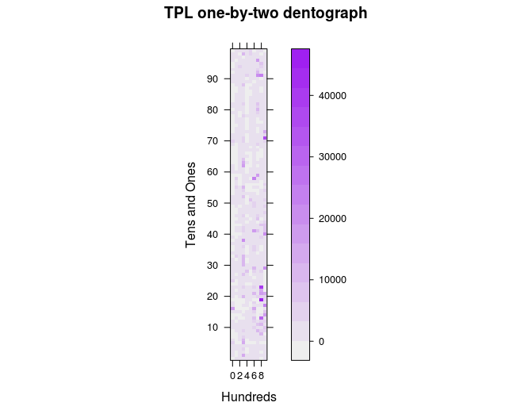
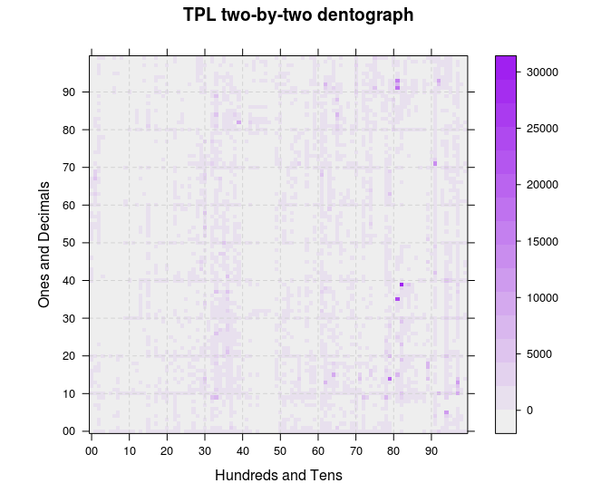
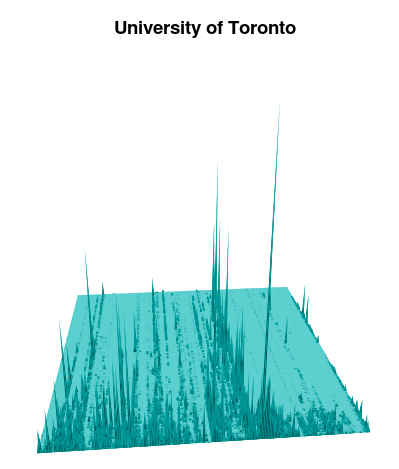

A dentograph is a visualization of a library's collection built on the idea that a classification scheme is a mathematical function mapping one set of things (books or the universe of knowledge) onto another (a set of numbers and letters). Dentographs can visualize aspects of just one collection or can be used to compare two or more collections. This article describes how to build them, with examples and code using Ruby and R, and discusses some problems and future directions.
These checkerboard dentographs compare the holdings of the Toronto and San Francisco Public Libraries. Without knowing anything more about dentographs, it is clear at a glance that whatever it is San Francisco has, Toronto has more.

Figure 1. Checkerboard dentographs of the Toronto and San Francisco Public Libraries
When you know that both libraries use the Dewey Decimal Classification, that the hundreds digit is shown along the x-axis and the tens along the y-axis, and that the colour of the square at (8,1) tells how many items are the 810s ("American literature in English"), you can see that Toronto and San Francisco collect the same kind of material, but Toronto's collection is much deeper.
Mountain dentographs are better for the Library of Congress Classification. They are so called because they look like mountain ranges, with one line of mountains for each LCC class. Here are mountain dentographs that compare two branches of the University of Toronto. The split between the arts, humanities and social sciences at Robarts and science at Gerstein is clear.
Figure 2. Mountain dentographs of two University of Toronto branches: Robarts (arts, humanities and social sciences) and Gerstein (science)
In this article I will show in detail how to generate both checkerboard and mountain dentographs to visualize and compare the holdings of different libraries. This is one of many possible uses for dentographs. Others include:
Dentographs are a practical implementation of the idea that classification schemes are functions. It may be years since the reader last thought of mathematical functions, so I will only briefly describe my thinking here. A full explanation will come in a subsequent paper that goes into the theory.
In grossly simplified terms, a function is a formula that, given some input, will generate some output. Functions such as f(x) = 3x + 4 take a number and turn it into another number by applying a simple rule: "multiply by three and add four." Wolfram Alpha defines a function as a "relation that uniquely associates members of one set with members of another set. More formally, a function from A to B is an object f such that every a ∈ A is uniquely associated with an object f(a) ∈ B."
The Library of Congress and Dewey Decimal Classifications are functions that map the universe of knowledge onto combinations of numbers and letters. It's possible to quibble with the "uniquely associated" part of the definition, but for our purposes, we can think of classification schemes as functions. And when we have a function, a natural next step is to ask: can we graph it? f(x) = 3x + 4 is easily graphed on the x-y plane as a straight line. Dewey numbers are in the range (0 < n < 1000): how can they be graphed? LCC call numbers are made up of letters from AC to ZA and numbers from 1 to 9999: how can they be graphed?
Dentographs combine call numbers with holdings counts and graph the result to visually represent a library's collection.
All of the examples in this paper are fully reproducible. By downloading the code and data sets you will be able to follow along, line by line, and generate all of the graphics. If you have access to call numbers from your own library system you can easily adapt what is here to make dentographs for that data.
All of the graphics will be generated with R, described on its site as "a language and environment for statistical computing and graphics." It's a powerful tool for advanced statistics, but it's also used for other purposes such as data mining and, as we'll be doing here, visualization. R on its own has a fairly simple interface, so I recommend also installing RStudio, a GUI that provides a powerful and friendlier interface. Install R first, then RStudio.
All of the scripts used in this paper are available at http://github.com/wdenton/c4lj-dentographs. Every shell or R command is fully reproducible. There are two kinds of snippets of code below: $ is at the command line and > is in R.
To get the code you need git, and to run the scripts you need Ruby.
Once git is installed, to make a local copy of the repository run this at the command line:
$ git clone http://github.com/wdenton/c4lj-dentographs
$ cd c4lj-dentographs
The last step is to set your R working directory to this same c4lj-dentographs directory. Either run R at the command line in that directory, or if you're using RStudio use Tools > Set Working Directory in the menu bar.
To generate dentographs we need call numbers. Luckily there is a good source: MARC records some libraries have uploaded to the Internet Archive to help the Open Library. A number of libraries have made their data available, and I use three here:
Two libraries supplied data to me on request:
To save time, I processed the records and data files to replicate the examples are all available. Download the five files there to the c4lj-dentographs directory:
They are all compressed with gzip so you will need to uncompress each before it can be used, for example:
$ gunzip utoronto-949.txt.gz
Dealing with a large set of MARC records can be painful. There are so many ways that a library can customize its data for its individual needs that writing one script to extract call numbers from any of the Open Library dumps became tedious and complicated. In the end I found it was much easier and faster to run yaz-marcdump on all the files, pick out the one MARC field I needed, and then process those lines to pick out the call numbers and store them in a text file. I'll show how I did this with the Toronto Public Library (TPL) data.
The goal of operating on the TPL catalogue records was to extract every numerical call number in the range (0 < number < 1000). This leaves us with all nonfiction material and any fiction (or drama, poetry, etc.) that was classified with a number. Anything without a number will be ignored. This is a problem in fairly assessing public library collections, where fiction is often classified as FIC or something similar. The dentograph will only accurately represent the nonfiction collection.
Visual inspection of the TPL MARC records is easily done with yaz-marcdump. The Dewey number is stored in the 090 field (probably for historical reasons, because it is now obsolete: see MARC Bibliographic definition of 09x), and it was easy to extract all 2,210,126 to a file. (To save you the trouble of doing all the downloading, tpl-090.txt is one of the data files available, but to recreate it yourself you would get the files and run yaz-marcdump OL.20100104.* | grep ^090 > tpl-090.txt.)
$ wc -l tpl-090.txt
2210126 tpl-090.txt
$ head -5 tpl-090.txt
090 $a FICTION ROB
090 $a FEATURE AIK
090 $a 614.59939 REP
090 $a 614.59939 R25
090 $a 598.29729 FFR
extract-tpl-ddc-from-090.rb pulls out the numerical Dewey call numbers, ignoring everything else, such as FICTION AIK. 645,244 090 fields are thrown out..
$ ruby extract-tpl-ddc-from-090.rb < tpl-090.txt > tpl-ddc-numbers.txt
$ wc -l tpl-ddc-numbers.txt
1564882 tpl-ddc-numbers.txt
$ head -3 tpl-ddc-number.txt
614.59939
614.59939
598.29729
Extracting LCC call numbers from the University of Toronto records is much the same, as we will see below, but with the advantage that fiction is also classified, so the call numbers cover everything in the collection. Everything, that is, with a proper LCC call number: special schemes for government documents, audio, video, maps and so on are left out.
The Dewey Decimal Classification is nicely suited to visualization because of its rigidity. The hundreds define the ten top-level classes: Computer science, information and general works (0xx), Philosophy and psychology (1xx), Religion (2xx), Social sciences (3xx), Language (4xx), Science (5xx), Technology (6xx), Arts and recreation (7xx), Literature (8xx), and History and geography (9xx). Each hundred is divided into ten tens and each ten into ten ones, within which the decimal expansions can go much farther.
We can divide up a Dewey collection into these hundreds, tens, ones, and even decimals, in various ways, and each leads to a dentograph of different granularity, complexity, and visual informativeness. To do these Dewey dentographs we will use the levelplot command in R.
The most basic Dewey dentograph shows the collection broken down to the tens: the ten hundreds are broken down into ten tens each, making a 10x10 grid with 100 squares. I call this a one-by-one Dewey checkerboard dentograph, because it uses one number of importance on each side of the grid.
To build the one-by-one we need to pick out the hundreds and tens from our list of call numbers. make-one-by-one-data.rb in the repository does this. Run the script on the file of all call numbers and generate a text file of pairs of numbers (notice how 614.59939 becomes "6 1"):
$ ruby make-one-by-one-data.rb tpl-ddc-numbers.txt > tpl-one-by-one.txt
$ head -3 tpl-one-by-one.txt
6 1
6 1
5 9
Finally we are ready to begin work in R. This is often how work with R goes: another language is used to clean the data first. R has text manipulation tools, but that is not its main strength, and if you are comfortable in a scripting language then you will probably find it easier to massage your data there.
It only takes four commands in R to generate a raw, unadorned checkerboard dentograph. One: load the lattice library, which provides the levelplot command. Two: load the data. Three: turn that data into a table. Four: generate a levelplot from the table.
> library(lattice)
> tpl.one.by.one <- read.table("tpl-one-by-one.txt")
> tpl.one.by.one.table <- table(tpl.one.by.one)
> levelplot(tpl.one.by.one.table)

Figure 3. Raw, unadorned Toronto Public Library one-by-one checkerboard dentograph
We'll make that look nicer, but first let's look into the data structures. The head command in R is much as in Unix, but instead of showing the first few lines in a file it shows the first few elements in a data structure. The numbers here are the same as above, but R has converted them into two columns and many rows.
> head(tpl.one.by.one)
V1 V2
1 6 1
2 6 1
3 5 9
4 3 6
5 3 6
6 9 7
> ncol(tpl.one.by.one)
[1] 2
> nrow(tpl.one.by.one)
[1] 1564666
The table command "uses the cross-classifying factors to build a contingency table of the counts at each combination of factor levels", according to the ?table help file. In other words, with our Dewey data, it will build a 10x10 table that counts how many times each pair of numbers appears in the tpl.one.by.one data frame.
> tpl.one.by.one.table
V2
V1 0 1 2 3 4 5 6 7 8 9
0 11648 19793 10232 1453 21 456 1298 4547 589 737
1 738 915 1661 6566 815 15094 398 4877 2100 4193
2 2654 878 5245 4987 3526 1523 5457 4636 11107 15440
3 59634 1518 34402 72476 25494 32259 50131 24536 20430 20600
4 1471 2694 13608 1943 3786 1044 1755 383 516 12257
5 8261 5968 5262 5499 3740 11867 1792 8387 3994 17269
6 2412 43022 40281 19564 28335 35299 5786 3149 6261 6193
7 18948 10984 13396 9673 27130 18819 4962 8883 30110 62074
8 18840 93554 80340 13161 17987 5302 8613 1421 3155 40156
9 7625 72508 41884 7230 63727 19756 5688 67239 2652 1987
For example, the value of the (3, 5) entry in this table is 32,259. This means that "3 5" appeared 32,259 times in the data file. We can confirm this at the command line:
$ grep -c "3 5" tpl-one-by-one.txt
32268
The Toronto Public Library has 32,259 items classified in the 350s ("Public administration and military science").
Now we can make a prettier dentograph. There are a vast number of ways to customize graphs and charts in R. I won't go into many details here, because most of the commands will be self-explanatory when you see them and then look at the generated image. Two things about this next snippet: I create a function palette to change the colours used, and the scales parameter lets me customize what appears on the axes, defining some new labels and rotating them where necessary.
> palette <- colorRampPalette(c("#eeeeee", "purple")) # Prepare a better colour palette
> levelplot(tpl.one.by.one.table,
col.regions = palette,
xlab = "Hundreds",
ylab="Tens",
main = "TPL one-by-one dentograph",
scales=(x=list(rot=90, at=seq(1, 10),
labels=c("General 0xx", "Philosophy, psychology 1xx",
"Religion 2xx", "Social sciences 3xx", "Language 4xx",
"Science 5xx", "Technology 6xx", "Arts 7xx",
"Literature 8xx", "History, geography 9xx"),
y=list(rot=0, at=seq(1, 10), labels=10*seq(0, 9))))
)

Figure 4. Toronto Public Library one-by-one checkerboard dentograph
Note the depth of the collection in the 300s and the relative paucity of the 200s 400s, and watch for how the representation changes in the next two dentographs.
The next step is to go further into the numbers. Let's make a one-by-two checkerboard dentograph, again with the hundreds on the x-axis but now tens and ones on the y-axis. This will be a 10x100 matrix. The process is the same as above, but make-one-by-two-data.rb prepares the data:
$ ruby make-one-by-two-data.rb tpl-ddc-numbers.txt > tpl-one-by-two.txt
Then in R:
> tpl.one.by.two <- read.table("tpl-one-by-two.txt")
> tpl.one.by.two.table <- table(tpl.one.by.two)
> levelplot(tpl.one.by.two.table,
col.regions = palette,
xlab = "Hundreds",
ylab="Tens and Ones",
main = "TPL one-by-two dentograph",
scales=(x=list(at=seq(1, 10, by = 2), labels=seq(0, 9, by =2),
y=list(rot = 0, at=seq(11, 100, by=10), labels=paste (seq(1, 9), "0", sep="")))))

Figure 5. Toronto Public Library one-by-two checkerboard dentograph
It's interesting how the hundreds form columns that run up the image (the 300s stand out again, for example), but perhaps there is both too little and too much here to be very useful.
Going one more level into the Dewey numbers, to make a two-by-two dentograph of a 100x100 matrix, is far more interesting. make-two-by-two-data.rb will generate the file of pairs of numbers we need:
$ ruby make-two-by-two-data.rb tpl-ddc-numbers.txt > tpl-two-by-two.txt
Then in R, again the data is loaded in and levelplot run. Here, to make it a little clearer about where the numbers fall, a grid of dashed lines is added (the way that this is done with lattice graphics, with a function declared and separate commands run within it, is a little confusing):
> tpl.two.by.two <- read.table("tpl-two-by-two.txt")
> tpl.two.by.two.table <- table(tpl.two.by.two)
> levelplot(tpl.two.by.two.table,
col.regions = palette,
main="TPL two-by-two dentograph",
xlab="Hundreds and Tens",
ylab="Ones and Decimals",
scales=(x=list(at=seq(1,100, by=10), labels=paste(seq(0, 9), "0", sep=""))),
panel=function(...){
panel.levelplot(...);
panel.abline(h=seq(11,99, by=10), lty="dashed", col="light grey");
panel.abline(v=seq(11,99, by=10), lty="dashed", col="light grey") }
)

Figure 6. Toronto Public Library two-by-two checkerboard dentograph
Here again we see the 300s as much stronger than the 200s and 400s. The darkest colours, representing the deepest parts of the collections, are even more visible now in the 800s. Three strong lines in the 900s have emerged: the 910s (Geography and travel), 940s (History of Europe) and 970s (History of North America), which matches the deep colouration those squares have in the one-by-one dentograph.
Where are the most items, and how many are there? Two commands tell us:
> which(tpl.two.by.two.table == max(tpl.two.by.two.table), arr.ind=TRUE)
row col
82 83 40
> max(tpl.two.by.two.table)
[1] 29366
There are 29,366 items at (83, 40) in the table, but the way R counts rows and columns does not equal how we are putting Dewey numbers into the table: row 1 of the table is 00, row 2 is 01, and so on; column 1 is 00, column 2 is 01, etc. Row 83 in the table is for Dewey 82x, and column 40 is 39 within that, giving up the call number 823.9 (English fiction, 1900-). Sure enough, if you look in the graph, count two lines over from 80 on the x-axis, and go up to one line below 40 on the y-axis, there it is, the darkest square.
Comparing two Dewey collections is easily done by putting two one-by-one checkerboard dentographs beside each other. Next we will create the Toronto and San Francisco Public Libraries comparison shown in the Introduction. We already have tpl.one.by.one.table in memory, so we begin by generating the data from the sfpl-ddc-call-numbers.txt data file.
$ ruby make-one-by-one-data.rb sfpl-ddc-call-numbers.txt > sfpl-one-by-one.txt
And then in R:
> sfpl.one.by.one <- read.table("sfpl-one-by-one.txt")
> sfpl.one.by.one.table <- table(sfpl.one.by.one)
> max(tpl.one.by.one.table)
[1] 93554
> which(tpl.one.by.one.table == max(tpl.one.by.one.table), arr.ind=TRUE)
row col
8 9 2
> max(sfpl.one.by.one.table)
[1] 11417
> which(sfpl.one.by.one.table == max(sfpl.one.by.one.table), arr.ind=TRUE)
row col
9 10 2
When doing a comparison like this we must make sure the same z-axis scale is used for both collections. The deepest part of the TPL collection at the tens level is the 810s (row 9 is the 800s, column 2 is the 10s), with 94,201 items. The deepest part of the SFPL collection is in the 910s (row 10, column 2) with 11,417 items. The at parameter to levelplot sets out where the cuts on the z-axis will happen. This is not necessary for a one-collection checkerboard dentograph, but when comparing two collections the colour schemes must match up and show collection depth levels in absolute and not relative terms. Here we force R to use a scale from 0 to 100,000, with 50 colour gradations (49 cuts) along the way.
> levelplot(tpl.one.by.one.table,
col.regions = palette(50), cuts = 49,
main = "Toronto Public Library",
xlab = "Hundreds", ylab = "Tens",
at = 2000*seq(1:50))
> savePlot(filename="comparison-tpl.png", type="png")
> levelplot(sfpl.one.by.one.table,
col.regions = palette(50), cuts = 49,
main = "San Francisco Public Library",
xlab = "Hundreds", ylab = "Tens",
at = 2000*seq(1:50))
> savePlot(filename="comparison-sfpl.png", type="png")
Back at the command line, convert from ImageMagick turns the two images into one:
$ convert +append comparison-tpl.png comparison-sfpl.png comparison-tpl-to-sfpl-large.png
$ convert -resize 800 comparison-tpl-to-sfpl-large.png comparison-tpl-to-sfpl.png
Figure 7. Comparison of TPL and SFPL one-by-one checkerboard dentographs
(A note about holdings counts in the Toronto and San Francisco Public Libraries MARC records. SFPL used one 945 field for each item it holds, so three copies of the same edition of a book means three 945s in one record. Three copies would show three times in the data file. TPL put its call number in the 090 and then used special codes in the 906 to show how many copies are at different branches. Three copies would show once in the data file. This made the data analysis much simpler, but the San Francisco Public Libary is overrepresented in the dentographs.)
The Library of Congress Classification doesn't have Dewey's methodically rigid structure. LCC call numbers can begin with one, two or three letters, which is manageable, but instead of being laid out neatly from 0 to 999 the numbers can range from a maximum of 9 (in LH, College and school magazines and papers) to 9999 (six classes outside of law, the first being BX, Christian denominations). Instead of trying to fit LCC call numbers to some Procrustean bed to make a checkerboard dentograph, we can leave them as they are in a mountain dentograph. Mountain dentographs are three-dimensional, with the LCC class letters on the x-axis, the numbers on the y-axis, and the item counts on the z-axis. They look like very orderly mountain ranges.
To keep things simple I am going to ignore everything in K ("Law"), which has 156 subdivisions, ending at KZD (Space law, law of outer space). My apologies to any law librarians reading this.
For the first examples we'll get call numbers from the University of Toronto MARC records in the Internet Archive. I want to keep the branch information to generate branch-specific dentographs, so the call number extraction will be a little different. The first step is to extract the 949s with yaz-marcdump as above (yaz-marcdump uToronto.mrc | grep ^949 > utoronto-949.txt) but to save time I've done this and put the results in the utoronto-949.txt data file. We'll run 949-extractifier.rb to pull out the branch and call number of each item. There are 6,787,653 949s in the MARC file, and after processing 5,414,215 proper LC call numbers are left in a very simplified listing.
$ wc -l utoronto-949.txt
6787653 utoronto-949.txt
$ head -2 utoronto-949.txt
949 $a AC1 .H32 N4 $w LC $c 1 $i 31761016601411 $d 17/4/2003 $e 17/4/2003 $l
STACKS $m ROBARTS $n 2 $r Y $s Y $t BOOK $u 26/8/1992
949 $a AC1 [Online resource 47903] $w LC $c 1 $i 2-2001 $l ONLINE $m E_RESOUR
CE $r Y $s Y $t E_RESOURCE $u 7/2/2008
$ ruby 949-extractifier.rb utoronto-949.txt > utoronto-branch-call-number.txt
$ wc -l utoronto-branch-call-number.txt
5414215 utoronto-branch-call-number.txt
$ head -2 utoronto-branch-call-number.txt
ROBARTS:AC 1
E_RESOURCE:AC 1
Let's look first at University of Toronto's entire collection. For this, we want all the call numbers regardless of branch, and it's easy to pull that out with cut. Then we need to prepare the data for R. We want to make a 3D graph where the class letters (AC, AE, AG, ..., ZA) run along the x-axis, the numbers run along the y-axis, and the z-axis shows the number of items at each call number. To do this the class letters need to be turned into numbers. convert-lc-to-numbers.rb does this by mapping AC -> 1, AE -> 2, ..., ZA -> 212. This forces the x-axis to always run from 1 to 212, so it will be the same width for all libraries. The script also adds points along the y-axis from (0,0) to (0,10000) to ensure that the graph has the same depth for all collections. If the width and depth were not forced it would be impossible to compare collections reliably: F or Q could end up in different places, or one chart might only go to 500 while another goes to 9,000.
$ cut -d ":" -f 2 utoronto-branch-call-number.txt > utoronto-call-number.txt
$ ruby convert-lc-to-numbers.rb utoronto-call-number.txt > utoronto-mountain-data.txt
Now we can visualize this with persp in R (theta and phi set the angles the graph is seen at, adjust them to move your point of view left/right and up/down):
> utoronto <- read.table("utoronto-mountain-data.txt")
> utoronto.table <- table(utoronto)
> persp(utoronto.table, theta = -5, phi = 20,
scale = TRUE, border = NA, axes = F,
box = F, col = "cyan", shade = 0.5,
main = "University of Toronto")
> max(utoronto.table)
[1] 19748
> which(utoronto.table == max(utoronto.table), arr.ind=TRUE)
row col
140 141 77

Figure 9. Unlabelled mountain dentograph of the University of Toronto
You'll see one standout high peak. As shown with max, we can locate it at (141, 77). 141 on the x-axis is QA, and 77 on the y-axis is 76 in call numbers (the y-axis starts at 0), so that peak is at QA 76: a number so familiar to readers I need hardly mention it is where computer science is found. LCC is incredibly limited in how it can accommodate books on that subject. This is the highest peak in every library I've graphed.
The next two examples will be easier with an R script we can run at the command line: dentograph.R is in the repository. It takes arguments on the command line that set the data file it's reading, the filename of the image it will output, and the title to use on that image. The dimensions of the output image are set with png. persp is run again, but with zlim to force the z-axis to the same scale across collections (just as we did with the Dewey checkerboard dentographs).
#!/usr/bin/env Rscript
# Usage: dentograph.R mountain-data.txt filename.png "Library Name"
args <- commandArgs(TRUE)
datafile <- args[1]
output <- args[2]
library_name <- args[3]
png(filename=output, height=1600, width=1600, units="px")
d <- read.table(datafile)
table <- table(d)
x <- 1:nrow(table)
y <- 1:ncol(table)
res <- persp(x, y, table, zlim = c(0,10000), # Change as necessary, or comment out
theta = -5, phi = 20,
scale = TRUE,
border = NA,
axes = F,
box = F,
col = "cyan",
shade = 0.5,
main = library_name)
# Label x-axis with class letters
xpoints = read.csv("x-axis-labels.csv")
for (i in 1:nrow(xpoints)) {
points(trans3d(xpoints$Point[i], 5, 0, pmat = res), col = "#000000",
pch = xpoints$Label[i], cex = 1)
}
axes = F means no axes are drawn, which means that there is no scale on the z-axis to show how many items are in the collection. It's easy enough to enable axes if needed, but it doesn't seem necessary to have them to simply give a quick impression of how two collections compare. The persp object is stored in res so that we have access to its layout later in order to label the x-axis. The script reads from a file a list of x-axis positions and ASCII codes such as (1, 65) and (11, 66). This puts "A" (65) at 1 on the x-axis and "B" (66) and 11 on the x-axis, skipping over "AC" at 2, "AE" at 3, and so on. It makes the graph slightly easier to read.
University of Toronto Libraries is a large system, with over fifty branches. The biggest are Robarts (holding arts, humanities and social sciences) and Gerstein (science). Comparing those two shows different their holdings are.
First we'll grep the Robarts and Gerstein holdings from the full list. Then we need to make sure dentograph.R knows the proper scale of the z-axis to suit these collections. The classic sort | uniq -c | sort -rn pipeline on Robarts and Gerstein holdings shows us that the highest number of holdings at one call number is just under 10,000 in both branches. The script in the repository is already set to use that number so it will work here without any edits.
$ grep ^ROBARTS utoronto-branch-call-number.txt | cut -d":" -f 2 > utoronto-robarts-call-number.txt
$ grep ^GERSTEIN utoronto-branch-call-number.txt | cut -d":" -f 2 > utoronto-gerstein-call-number.txt
$ sort utoronto-robarts-call-number.txt | uniq -c | sort -rn | head -1
9574 PG 3476
$ sort utoronto-gerstein-call-number.txt | uniq -c | sort -rn | head -1
9482 QA 76
$ ruby convert-lc-to-numbers.rb utoronto-robarts-call-number.txt > utoronto-robarts-mountain-data.txt
$ ruby convert-lc-to-numbers.rb utoronto-gerstein-call-number.txt > utoronto-gerstein-mountain-data.txt
$ dentograph.R utoronto-robarts-mountain-data.txt utoronto-robarts-mountain.png "Robarts (arts/hum/soc sci)"
$ dentograph.R utoronto-gerstein-mountain-data.txt utoronto-gerstein-mountain.png "Gerstein (science)"
$ convert +append utoronto-robarts-mountain.png utoronto-gerstein-mountain.png utoronto-branches.png
Figure 11. University of Toronto's Robarts and Gerstein branches compared
The distinctness of the two collections is clear. Gerstein is almost entirely concentrated in Q (Science) and R (Medicine) with some in S (Agriculture) and T (Technology). Robarts sprawls heavily throughout A-P, especially P (Linguistics and Literature). Because of how LCC works, the relatively small range of numbers used in Q and R is also easy to see. Seven of the nineteen letters in P go into the 9,000s, but the maximum number possible for any of the letters in the Qs is under 1,000 (for example Q stops at 510 and QA (Mathematics) at 939).
Finally, let's compare the University of Toronto collection to the libraries of two other Canadian universities, York University and the University of Prince Edward Island. These dentographs tell us at a glance how the collections compare, even without numbers to show how large they are.
First, as a bit of background, some basic facts about the universities and their libraries. (Enrolment numbers are total students as of fall 2010, taken from the Association of Universities and Colleges of Canada's Enrolment by University page):
The following commands will generate the dentographs. Before running them, note that the maximum value in University of Toronto's holdings is 19,748 (this can be found with a sort | uniq | sort as above), so you will need to edit dentograph.R to change the zlim value to 20,000 to force the z-axis to be the same in all graphs. If you don't edit it, some spikes will run out the top of the dentographs.
$ gunzip york-call-number.txt.gz upei-call-number.txt.gz
$ ruby convert-lc-to-numbers.rb york-call-number.txt > york-mountain-data.txt
$ ruby convert-lc-to-numbers.rb upei-call-number.txt > upei-mountain-data.txt
$ dentograph.R utoronto-mountain-data.txt utoronto-mountain.png "University of Toronto"
$ dentograph.R york-mountain-data.txt york-mountain.png "York University"
$ dentograph.R upei-mountain-data.txt upei-mountain.png "University of PEI"
$ convert +append utoronto-mountain.png york-mountain.png upei-mountain.png mountain-comparison.png
$ convert -resize 800 mountain-comparison.png mountain-comparison-smaller.png
Figure 10. University of Toronto, York University and University of PEI compared
PEI's collection is sparse and shallow compared to the others, which is no reflection on anything other than its size. It's unfair to compare it to much larger libraries except to serve some kind of illustration like this. On the other hand, comparing Toronto and York, two large universities in the same city, is quite interesting. Toronto is clearly broader and deeper than York: its collection is larger and covers more subjects, apparently across the board. In B (Philosophy, psychology, religion) Toronto has more (both close to the x-axis and stretching out to the far side), probably because it has divinity programs. M (Music) and N (Fine Arts) are both denser. P is much richer than at York, with far more high spikes. The science cluster in Q is also much denser.
I hope readers find the ideas here interesting and will extend them beyond what I've described. Aside from the possible uses described at the beginning of the paper, there are two lines of future work that I see, but I hope readers will find more.
First, there are more ways to use the three dimensions of mountain dentographs. Perhaps it would be possible to fly around inside the mountain dentograph, exploring the collection and seeing flags or labels on the mountains to identify what LC number or subject they represent. In R some interactivity is possible with the persp3d command, which makes it possible to rotate and zoom the image. The arguments are the same but the experience is very different from persp. Run this to try it:
> library(rgl)
> persp3d(utoronto.table, theta = -5, phi = 20,
scale = TRUE, border = NA, axes = F,
box = F, col = "cyan", shade = 0.5,
main = "University of Toronto")
Second, perhaps three dimensions for LCC isn't best, and a two-dimensional representation would work better. LCC is so sprawling and varied a classification that it would probably work best not to map it directly but to make clusters. For example, the University of Toronto dentographs show a strong line along BX (Christian denominations), which has these subsections, as listed in B - Philosophy. Psychology. Religion in the Library of Congress Classification Outline:
Five data points are much easier to understand than 10,000. If the rest of LCC was similarly clustered and mapped it would be easy to generate checkerboard LCC dentographs. They would be ragged because there would be different numbers of clusters per letter, so instead of a neat 10x10 or 100x100 visualization it would be 212 wide (more if law is included) by varying depths, but that doesn't matter.
A mapping somewhat like this is in fact already available: the OCLC Conspectus. This is old work, now abandoned, but perhaps still useful here. It has 29 top-level subjects, such as Art and Architecture, Medicine, and Philosophy and Religion. There are 378 narrower second-level subjects. Philosophy and Religion has 18, such as "Philosophy - Ancient, Medieval, Renaissance," "Philosophy - Modern (1450/1600- )," and "Logic." Each subject is associated with LCC and DDC call number ranges (so it is possible to assess collections regardless of classification scheme), and here BX is boiled down to three headings: "Eastern Christian Churches & Ecumenicism" from BX 0-765, "Roman Catholic Church" from BX 800-4795, and "Protestantism" from BX 4800-9999. It would be possible to use this to generate either checkerboard or mountain dentographs by mapping the top-level subjects on the x-axis and the second-level subjects on the y-axis.
Finally, there are undoubtedly other, and I hope better, forms of dentographs than checkerboards and mountains.
The biggest problem with dentographs of holdings is that they show quantity but not quality. There is no easy way, automated or manual, to assess the quality of a collection. We can only visualize available data, so dentographs are limited. However, as mentioned above, dentographs can also show usage, overlap or uniqueness, which in their own ways tell us something about a collection's quality.
The second main problem is that dentographs depend entirely on call numbers from a standard classification (or, with the OCLC Conspectus, subject assignments to a controlled vocabulary). For most print material, that is fine. Everything on a library shelf will have some kind of call number. If the call number is not LCC or Dewey, however, that is a problems. Collections that are special for their format or location will be overlooked, as may huge collections of fiction or children's books in public libraries. Electronic resources are especially susceptible to lacking call numbers. At my library, very few electronic books or journals have valid LCC call numbers: they are all assigned ELECTRONIC.
However, restricting to print or other physical resources may actually be useful. Among academic libraries, if all libraries of a similar size subscribe to the same electronic resources then comparing that part of their collections is pointless. The comparison of University of Toronto to York University shows how much better University of Toronto is with its print collection, but when it comes to electronic resources, the two are more or less the same (except for subjects University of Toronto teaches that York doesn't, such as medicine and architecture). More and more, it is the local print material that is making collections special, and dentographs are good tools for that.
A side effect of using standard classifications such as Dewey and LCC is that the dentographs reveal the limitations of the schemes. In the checkerboards for the Toronto Public Library, Dewey's 290s are coloured darker than any other ten in the 200s ("Religion") because it is everything that is not Christianity ("Other religions"). The Toronto Public Library's expansive, multicultural religion collection is shoehorned into Dewey's nineteenth century organization. Similarly, LCC was not built to handle computer science, and now QA 76 is so overcrowded that it cannot be fairly compared to other numbers.
Thirdly, quality and access are always problems with cataloguing records. Bad data can be worked around, but not every library makes regular catalogue dumps available. They should. That data, and union and consortial catalogues, should be available under open licenses.
convert and resize from ImageMagickyaz-marcdump from the YAZ toolkitWilliam Denton <wdenton@yorku.ca> is Web Librarian at York University in Toronto, Canada. He has a B.Sc in Mathematics and an MISt from the University of Toronto. His web site is Miskatonic University Press.
{kind=link}
{kind=link}